In dem Register "manuelle Selektion" können Ausprägungsartikel von einer Ausprägung (Lager, Charge, Identnummer, usw.) auf eine andere Ausprägung umgebucht werden.
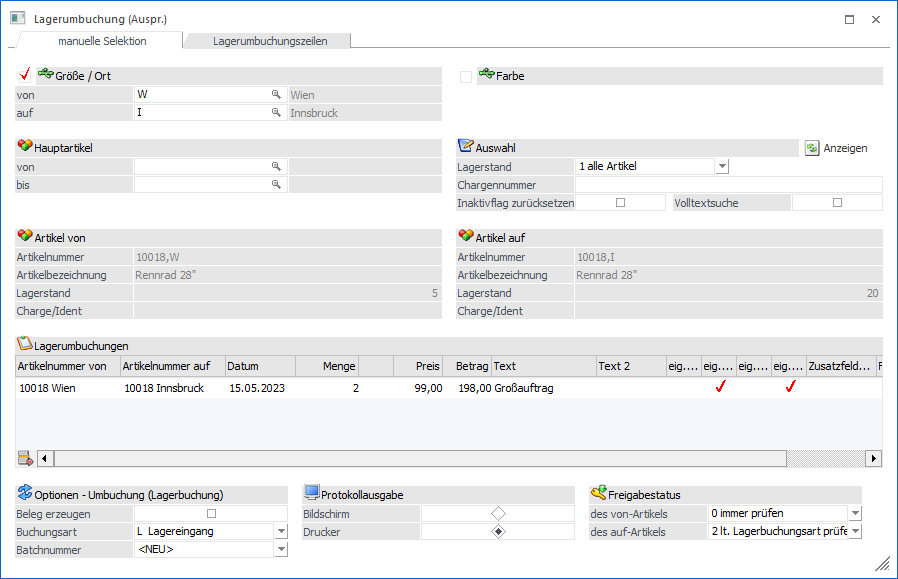
Folgende Eingabefelder, Einstellungen und Information stehen zur Verfügung:
Ausprägungen
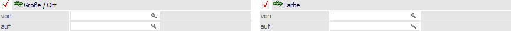
Ø Ausprägung 1 von / bis (hier "Größe / Ort")
Durch Aktivierung von "Ausprägung 1" kann in den nachfolgenden Eingabefeldern selektiert werden, von welcher Ausprägung 1 auf welche Ausprägung 1 umgebucht werden soll.
Ø Ausprägung 2 von / bis (hier "Farbe")
Durch Aktivierung von "Ausprägung 2" kann in den nachfolgenden Eingabefeldern selektiert werden, von welcher Ausprägung 2 auf welche Ausprägung 2 umgebucht werden soll.
Hinweis
Diese beiden Optionen können wahlweise oder auch gemeinsam aktiviert werden. Welche Variante verwendet wird, hängt davon ab, wie (mit welchen Ausprägungen) die Artikel angelegt sind.
Beispiel
Umbuchung eines Ersatzteiles vom Lagerort "Wien" und dort "Regal 4" auf Lagerort "Innsbruck" und dort "Regal 1":
ü Es müssen beide Checkboxen aktiviert werden und die entsprechenden Ausprägungen eingegeben werden.
Umbuchung von Fahrrädern vom Lagerort "Wien" auf Lagerort "Innsbruck":
ü Bei Artikeln, die nur eine Ausprägung verwenden, wird nur eine Ausprägung umgebucht, auch wenn beide Checkboxen aktiviert sind.
Weitere Selektion
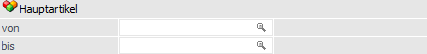
Ø Hauptartikel von / bis
An dieser Stelle kann eine zusätzliche Einschränkung auf die Hauptartikel erfolgen, für welche eine Umbuchung vorgenommen werden soll.
Hinweis
Die Kombinationsmöglichkeiten aus "Hauptartikel" + "Ausprägung 1 und 2" werden bei Anwahl des Buttons "Anzeigen" auf Grundlage der weiteren Anzeigeeinstellungen ermittelt und in die Umbuchungstabelle eingetragen.
Anzeige
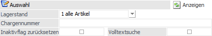
Ø Lagerstand
Aus der Auswahlliste kann gewählt werden, ob "alle Artikel" oder "nur Artikel mit Lagerstand > 0" angezeigt werden sollen.
Ø Chargennummer
Sofern Serien- und / oder Chargennummernartikel verwendet werden, kann hier auch noch die entsprechende Nummer eingegeben werden. Damit können dann nur jene Artikel umgebucht werden, welche der Chargen- / Seriennummer entsprechen oder einen Teil davon beinhalten.
Ø Inaktivflag zurücksetzen
Mit Hilfe dieser Option können auch Umbuchungen auf inaktive Artikel vorgenommen werden. Wenn eine Buchung auf einen inaktiven Artikel erfolgt, wird bei dieser Option vor der Buchung das Kennzeichen "Inaktiv" bei diesem Artikel entfernt.
Achtung
Von inaktiven Artikeln kann nie etwas weggebucht werden!
Ø Volltextsuche
Wird diese Option aktiviert, dann wird der im Feld "Chargennummer" eingegebene Wert in der gesamten Chargen-/Identnummer gesucht. Bleibt die Checkbox inaktiv, so wird der Wert nur am Anfang gesucht.
Ø Anzeigen
Durch Anwahl des Buttons "Anzeigen" wird die Umbuchungstabelle gemäß der gewählten Selektion und Einstellungen gefüllt.
Artikel von / Artikel auf
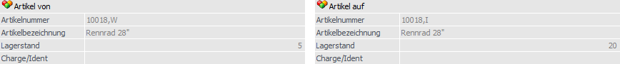
In diesem Bereich werden die Artikelinformationen zu der aktivierten (markierten) Umbuchungszeile dargestellt.
Umbuchungstabelle
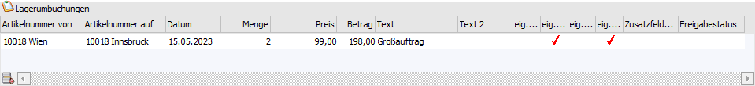
In der Tabelle werden alle Artikel gemäß den oben getroffenen Einstellungen angezeigt, wobei manuell (durch Eingabe der Hauptartikelnummer) weitere Umbuchungszeilen hinzugefügt werden können. Innerhalb der Tabelle sind dabei folgende Informationen ersichtlich bzw. können bearbeitet werden:
Ø Artikelnummer von
Es wird die Artikelnummer angezeigt, von welcher die Menge abgebucht wird.
Hinweis
Durch Eingabe der Hauptartikel können weitere Umbuchungszeilen erfasst werden. Hierbei ergänzt das Programm die Hauptartikelnummer um die im Selektionsbereich getroffenen Ausprägungsangaben.
Ø Artikelnummer auf
Es wird die Artikelnummer angezeigt, auf welcher die Menge gebucht werden soll.
Ø Datum
An dieser Stelle wird das Buchungsdatum angezeigt. Der Vorschlag erfolgt dabei auf Grundlage des aktuellen WinLine-Datums und kann manuell editiert werden.
Ø Menge / Menge 2
In diesem Feld wird die umzubuchende Menge eingetragen. Wird der Artikel in 2 Mengen geführt, steht auch das Feld "Menge 2" zur Verfügung.
Ø Preis
Der Einzelpreis wird gemäß der Einstellung der Lagerbuchungsart (siehe Feld "Buchungsart") vorgeschlagen und kann editiert werden.
Ø Betrag
Der Betrag errechnet sich aus "Menge * Preis" und kann nicht verändert werden.
Ø Text / Text 2
An dieser Stelle können 2 Umbuchungstexte (jeweils 50-stellig) hinterlegt werden. Diese Texte werden beim Buchen in der entstehenden Artikeljournalzeile übernommen.
Ø eig. Preis bis Freigabestatus
Wenn im Zuge der Lagerumbuchung ein neuer Artikel angelegt wird (z.B. bei der Umbuchung in Verbindung mit Chargen- / Identnummern), so können in diesen Spalten Einstellungen getroffen werden, wie der neue Artikel anzulegen ist. Die Voreinstellungen hierfür werden aus dem Programmbereich "Ausprägungen initialisieren" übernommen und können pro Artikel verändert werden.
eig. Preis / eig. Lager / eig. Text/ eig. Zusatz
Ist die jeweilige Option aktiv, dann wird der neue Artikel mit einem eigenen Preisstamm, einem eigenen Lagerstamm oder einem eigenen Textstamm angelegt, wobei die Informationen vom Hauptartikel übernommen werden. Bleibt die jeweilige Checkbox inaktiv, dann wird der neue Artikel mit einem Verweis auf den jeweiligen Hauptartikel angelegt.
Zusatzfelder übernehmen
Des Weiteren steht die Möglichkeit zur Verfügung, die Zusatzfelder jener Ausprägung auf die neu anzulegende Ausprägung zu übernehmen, von der umgebucht wird. Dabei stehen folgende Einstellungen zur Auswahl:
ü Die Zusatzfelder werden nicht übernommen, d.h. die Checkbox bleibt inaktiv.
ü Es wird nur der Verweis auf die Zusatzfelder übernommen. D.h. die Zusatzfelder sind nur einmal im System gespeichert, werden aber sowohl von jener Ausprägung verwendet, von der umgebucht wird, als auch von der Ausprägung, auf die umgebucht wird (jene, die dabei neu angelegt wird). Dazu muss die Checkbox "Zusatzfelder übernehmen" aktiviert werden.
ü Die Zusatzfelder werden übernommen und beim neu angelegten Artikel gespeichert. D.h. die neu angelegte Ausprägung hat einen eigenen Zusatzfelderstamm. Dazu muss die Checkbox "Zusatzfelder übernehmen" aktiviert werden und zusätzlich definiert werden, dass die neu anzulegenden Ausprägungen einen eigenen Zusatzfelderstamm haben (Option "eig. Zusatz").
Hinweis
Die Vorbelegung dieser Checkboxen ist abhängig von der Einstellung im Menüpunkt "Ausprägungen initialisieren" und kann jederzeit manuell übersteuert werden.
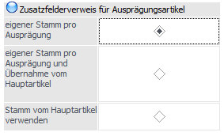
Wurde hier definiert, dass jede Ausprägung einen eigenen Zusatzfelderstamm hat, so ist standardmäßig die Checkbox "eig. Zusatz" gesetzt, nicht jedoch "Zusatzfelder übernehmen".
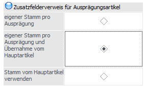
Steht der Radiobutton auf "eigener Stamm pro Ausprägung und Übernahme vom Hauptartikel", sind die Checkboxen "Zusatzfelder übernehmen" und "eig. Zusatz" standardmäßig aktiviert.
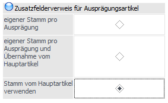
Bei der Einstellung "Stamm vom Hauptartikel verwenden", ist keine der beiden Checkboxen aktiviert.
Freigabestatus
Wenn im Zuge der Lagerumbuchung ein Artikel neu angelegt wird, so kann auch der Freigabestatus verändert werden. Standardmäßig wird die Option "lt. Freigabedefinition" verwendet (d.h. der Artikel wird so angelegt, wie es in den Freigabedefinitionen bestimmt ist). Aus der Auswahlliste kann aber auch ein alternativer Freigabestatus vergeben werden.
Tabellenbuttons
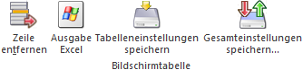
Ø Zeile entfernen
Der Button "Zeile entfernen" steht nur für neue Ausprägungszeilen zur Verfügung und löscht die gerade markierte Zeile heraus.
Ø Ausgabe Excel
Durch Anwahl des Buttons "Ausgabe Excel" wird der Inhalt der Tabelle nach Microsoft Excel übergeben.
Ø Tabelleneinstellungen speichern
Die Spalten einer Tabelle können grundsätzlich an beliebige Positionen verschoben, bzw. in der Breite entsprechend angepasst werden. Durch Anwahl des Buttons "Tabelleneinstellungen speichern" werden die Einstellungen benutzerspezifisch gespeichert und bei dem nächsten Aufruf des Programmpunktes wieder vorgeschlagen.
Ø Gesamteinstellungen speichern
Im Gegensatz zu "Tabelleneinstellungen speichern" können mit "Gesamteinstellungen speichern" mehrere Tabellenaufbauten gespeichert und nach Wunsch geladen werden. Zusätzlich werden Sonderfunktionen der Tabelle (z.B. "Spalte gruppieren") ebenfalls bei der Speicherung bedacht.
Optionen - Lagerbuchung (Lagerbuchung)
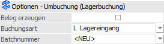
Ø Beleg erzeugen
Durch Aktivierung dieser Option wird bei Anwahl des Buttons "Ok" die Lagerumbuchung als Beleg erzeugt, wobei die Einstellung benutzerspezifisch gespeichert wird.
Die hierfür nicht benötigten Eingabefelder "Buchungsart" bzw. "Batchnummer" werden automatisch für eine Eingabe gesperrt.
Voraussetzungen
Folgende Voraussetzungen sind für die Belegerstellung zu erfüllen:
ü Personenkonto
Als Personenkonto für den Beleg wird jenes Konto verwendet,
welches bei den Ausprägungen hinterlegt ist ("Fremdlager/Konto" bei der
Ausprägung in Fenster "Ausprägungen verwalten"). Da in den Ausprägungen
unterschiedliche Konten hinterlegt sein können, wird die Logik
"auf-Ausprägung 1 => von-Ausprägung 1 => auf-Ausprägung 2 =>
von-Ausprägung 2" verwendet.
ü Lagerbuchungsart
Eine weitere
Voraussetzung für die Belegerzeugung ist, dass eine Lagerbuchungsart vom Typ
"Fakturierung" verwendet wird, in welcher der Buchungsschlüssel "L+" lautet.
Diese muss wiederum in einer Belegart (z.B. Verkaufsbelegart) hinterlegt
sein.
Hinweis
Sollte kein Konto gefunden werden, so wird auf dieses entsprechend hingewiesen.
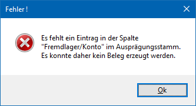
Ø Buchungsart
Für die Lagerumbuchung kann eine der vordefinierten Buchungsarten verwenden bzw. abgeändert oder eine neue Buchungsart anlegen werden. Des Weiteren kann in der Buchungsart u.a. definiert werden, zu welchem Preis die Warenumbuchung durchgeführt werden soll.
Ø Batchnummer
Für die Journalzeilen, die im Zuge der Lagerumbuchung erzeugt werden, kann eine Batchnummer vergeben werden. Diese Batchnummer kann auch dazu verwendet werden, um Umbuchungen auch noch nachträglich Nachverfolgen zu können. Bei der Vergabe der Batchnummer gibt es 2 Varianten:
ü <NEU>
Wenn die Option NEU
verwendet wird, dann wird im Zuge der Umbuchung eine neue Batchnummer vom
Programm vergeben, wobei diese aus der Lagerbuchungsart und dem Datum/Uhrzeit
der Durchführung zusammengestellt wird. Beispiel: L31102022103342 bedeutet, dass
am 31.10.2022 um 10 Uhr 33 und 42 Sekunden eine Lagerumbuchung mit der
Lagerbuchungsart L durchgeführt wurde.
ü Bestehende Batchnummer
Wurden
bereits Batchnummer vergeben, so kann aus der Auswahllistbox eine bestehende
Batchnummer ausgewählt werden. Damit können dann z.B. mehrere
Lagerumbuchungsvorgänge in einer Batchnummer zusammengefasst werden.
Protokollausgabe
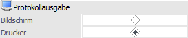
Ø Bildschirm / Drucker
Im Zuge der Lagerumbuchung wird auch ein Buchungsprotokoll ausgegeben. Hier kann eingestellt werden, ob die Ausgabe am Bildschirm oder am Drucker erfolgen soll.
Hinweis
Ist bei einer der verwendeten Ausprägungen ein Personenkonto hinterlegt so stehen beim Druck des Lagerumbuchungsprotokolls dafür die Variablen des Personenkontos zur Verfügung. Damit kann z.B. das Umbuchungsprotokoll wie eine Art Beleg gedruckt werden. In der Standardauslieferung gibt es dazu ein angepasstes Formular (P02W263A) bei der die Kontenadresse angedruckt wird und nur die Zeilen des "auf-Lagers" angedruckt werden.
Freigabestatus
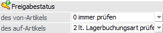
Ø des von-Artikels
Aus der Auswahlliste kann gewählt werden, wie der Artikel geprüft werden soll, von dem die Menge abgebucht wird. Dabei stehen folgende Optionen zur Auswahl:
ü 0 - immer prüfen
Der
Freigabestatus des abgebenden Artikels wird immer geprüft. Ist der Artikel z.B.
nicht freigegeben, wird er in der Tabelle nicht angezeigt.
ü 1 - nie prüfen
Der
Freigabestatus des abgebenden Artikels wird nie geprüft, d.h. der Artikel wird
immer angezeigt.
ü 2 - lt. Lagerbuchungsart
prüfen
Der Freigabestatus wird gemäß der Einstellung in der Lagerbuchungsart
geprüft.
Ø des auf-Artikels
Aus der Auswahlliste kann gewählt werden, wie der Artikel geprüft werden soll, auf den die Menge zugebucht wird. Dabei stehen folgende Optionen zur Auswahl:
ü 0 - immer prüfen
Der
Freigabestatus des empfangenden Artikels wird immer geprüft. Ist der Artikel
z.B. nicht freigegeben, wird er in der Tabelle nicht angezeigt.
ü 1 - nie prüfen
Der
Freigabestatus des empfangenden Artikels wird nie geprüft, d.h. der Artikel wird
immer angezeigt.
ü 2 - lt. Lagerbuchungsart
prüfen
Der Freigabestatus wird gemäß der Einstellung in der Lagerbuchungsart
geprüft.
Einmal vorgenommene Einstellungen der Optionen werden benutzerspezifisch gespeichert.
Buttons
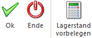
Ø Ok
Durch Drücken des Buttons "Ok" bzw. der Taste F5 werden die Umbuchungen durchgeführt.
Ist ein Artikel (ohne Chargeninformation!) in einer Ausprägung auf die gebucht werden sollte noch nicht angelegt, wird diese im Zuge der Buchung automatisch angelegt. Dabei werden die Werte für neu angelegte Ausprägungen aus den Feldern "Artikeluntergruppe", "alternative Artikelr.1", usw. von jener Ausprägung übernommen, von der umgebucht wurde (nicht Hauptartikel!).
Ø Ende
Durch Drücken des Buttons "Ende" bzw. der Taste ESC wird das Fenster geschlossen und keine Buchungen durchgeführt.
Ø Lagerstand vorbelegen
Wenn dieser Button aktiviert ist, so wird beim Füllen der Tabelle (durch Anklicken des Buttons "Anzeigen") oder beim Erfassen einer neuen Artikelzeile der Lagerstand des Artikels als Menge vorgeschlagen, von dem weggebucht werden soll. Der Status des Buttons (aktiviert oder nicht) wird benutzerspezifisch gespeichert.